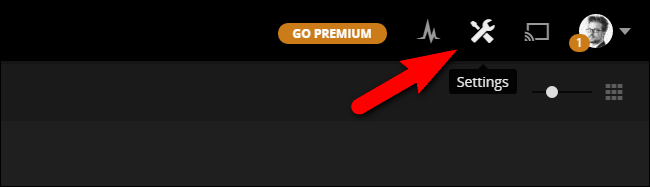
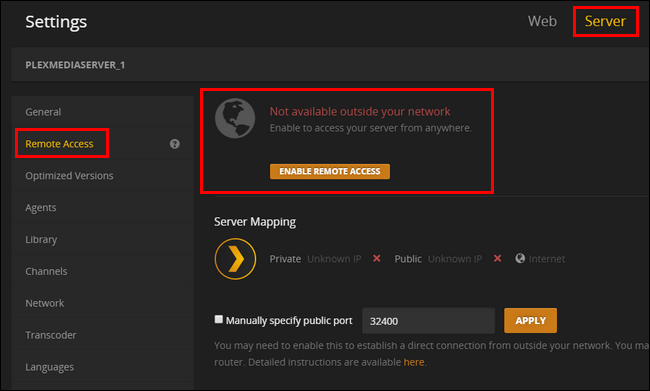
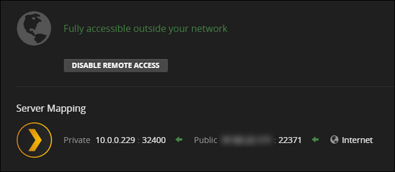
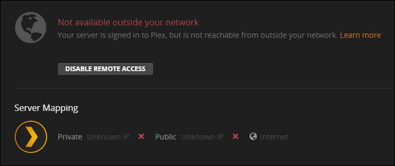
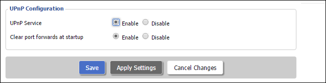
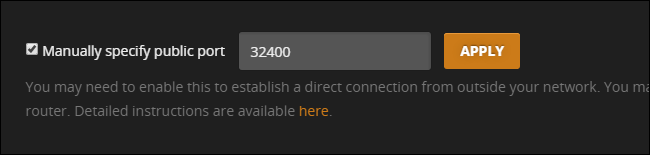
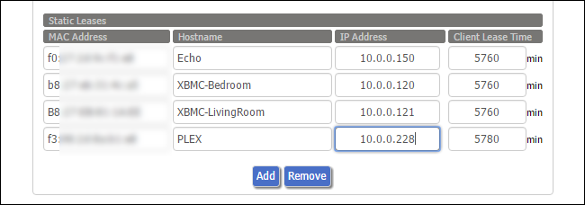
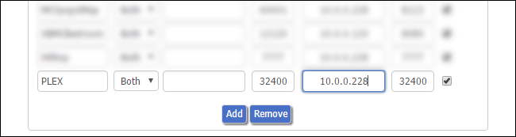

How-To Geek
How to Enable (and Troubleshoot) Remote Access to Your Plex Media Server
Plex Media Server’s remote access function is usually so smooth to set up that it’s practically magic. But if you’re having trouble accessing your movies from afar, we’re here to help.
If you primarily use Plex Media Server for watching content on your local network (like streaming your favorite shows to your HDTV or smartphone), you may not have given much though to the benefits of remote access.
One of the greatest things about the Plex Media Server platform, however, is the ease with which you can access your media from anywhere. With remote access enabled and properly configured, you can watch your favorite TV shows anywhere you have internet access: on your phone while you’re sitting in a waiting room, on your laptop while you’re vacationing, or even on a smart TV at a friend’s house.
Most of the time you should have very little trouble setting up remote access to your Plex Media Server, but there are a few instances where your home network configuration can throw you a curve ball. Let’s look at how to enable remote access and then how to trouble shoot remote access issues. If you need help with the initial setup and configuration of Plex Media Server, please refer to our getting started with Plex guide here.
How to Enable Remote Access
During the initial setup of the Plex Media Server, the setup wizard prompts you to enable or disable remote access. While the default state is enabled, you may have opted at the time to disable remote access, or perhaps you inadvertently disabled it while messing around with the system settings later on. Regardless, it’s easy enough to check the status of remote access and enable it if it is currently disabled.
While logged into your Plex Media Server’s web control panel, select the Settings icon from the upper right toolbar.

Within the Settings menu select, the “Server” tab. Then, from the left hand navigation pane, select “Remote Access”. By default, you’ll only see a simple view (the information in the large red box below), for the more advanced view with the “Server Mapping” information visible, click on the “Show Advanced” button in the upper right corner of the navigation bar.

If your server is currently not configured for remote access, it will say “Not available outside your network” as seen above. Click the large orange button that reads “Enable Remote Access”.
After you enable remote access (or if remote access was already enabled), you’ll see an entry similar to the one below.

In addition to telling you that the server is accessible, the control panel will also indicate the internal IP address and port number of the Plex Media Server on your local network as well as external, or public, IP address and port number.
Although making note of both the internal and external IP addresses and port numbers is useful for troubleshooting, you don’t need to know any of this information for regular day-to-day use of Plex Media Server. The Plex system automatically handles all the connection data as long as you are logged into the same Plex account on your media server and all your client devices. If you’re having issues, however, don’t worry–in the next section we’ll look at the most common issues and how to solve them.
Troubleshooting Your Plex Media Server’s Connection
While remote access is generally headache free, sometimes you run into a hiccup or two. If you enable remote access to your Plex Media Server and see an error message like “Not available outside your network”, then you have a little trouble shooting to do.

It’s important to note that the Plex Media Server can still reach the internet (the server is signed in), but the Plex system can’t access your Plex server from the outside. If you can’t log in, at all then you’ve got a bigger problem on your hands–a general internet outage. (But don’t worry, even if you’re experiencing network problems beyond just setting up your Plex server, we still have you covered.)
Enable UPnP For Automatic Connections
The first thing you should check, when you encounter this error message, is that your router supports either NAT-PMP (less common) or UPnP (more common). Both of these services allow for automatic port forwarding and if your router supports them, then Plex Media Server will automatically configure its own port forwarding.

Check the documentation of your router or simply search for the router name and additional search terms like “how to enable UPnP” for additional information. If UPnP is off, turning it on will allow Plex to automatically forward itself to the greater internet.
If your router doesn’t support NAT-PMP or UPnP (or you have a pressing reason not to use it) then you’ll want to jump to the section below “Manually Forward Your Ports”
Banish Address Problems With Bridge Mode
Far and away the UPnP fix should remedy nearly everyone’s connectivity issues. In rare situations, however, your network configuration can be conspiring against you. Routers have a feature known as Network Address Translation (NAT) that handles the complex task of juggling all the network requests coming into your single public facing IP against all the many internal IP addresses those requests are destined for.
All by itself, the NAT system works awesome. When a NAT system is doubled up with another NAT system, however, it can create issues for apps (like the Plex Media Server) that rely on UPnP to create automatic port forwarding rules. This occurs commonly when you have a router/modem combo supplied by your ISP and your own router plugged into that unit. For help dealing with that particular situation, as well as eliminating double NAT problems in general, check out our guide here.
Manually Forward Your Ports
If you prefer not to use UPnP or you can’t resolve your double NAT situation that’s playing havoc with UPnP, you can circumvent the entire issue by manually setting up a port forwarding rule. For the unfamiliar, port forwarding is simply when you tell your router “OK router, any requests that come in to my public IP address at port #XXXX, should be forwarded to this internal IP address at Port #YYYY.”
To do so, you need to tell Plex Media Server you wish to manually specify the port number, and then, at the router level, assign a static IP address to your Plex Media Server computer and create a port forwarding rule. First, let’s turn on the manual port mode in Plex. To do so navigate to Settings > Server > Remote Access (as we did in the previous section of the tutorial).
Check “Manually specify public port”. Unless you have a pressing reason to do so, there’s no need to change the port number here. Click “Apply”.

If you don’t see the manual port option in your settings, you need to click on the “Show Advanced” button in the upper right navigation bar.
![]()
Once you’ve turned on the option in Plex, it’s time to access your router’s admin page. How you set up a static IP address and port forwarding rules vary from router to router, but the general premise is the same. You’ll need to identify your Plex Media Server computer on the network and then look for an option in your router to create a “static IP”, “static lease”, or “DHCP reservation” to permanently associate the Plex Media Center with a given IP address. Below you can see an example of what adding a static IP address looks like, via our DD-WRT router.

If you don’t do this every time your router assigns a new internal address to the media server it will break your port forwarding rule. If you need more information on setting up a static IP address you can search for documentation for your specific router and read up on static IP addresses here.
Once you’ve set a static IP address for the server, then you simply need to tell the router, via port forwarding rule, that all traffic on that port should be directed at that internal IP address. Again, via our DD-WRT router, here’s a general example of what that looks like: we’ve forwarded everything on external port 32400 to the internal IP address of the Plex server, also on port 32400 to keep things simple. Check out our full guide to port forwarding for more information, if you need it.

After you’ve set the port in Plex and set up the two rules (static IP and port forwarding) in your router, everything is all set. Simply hop back over or to the Plex Media Server control panel to double check the server status page, and enjoy.
Plex Media Server generally works, by the magic of UPnP, right out of the box. But in those rare instances it doesn’t, it’s just a matter of applying a few simple tweaks to get your media server back online.
![]()
![]()
![]()
![]()
![]()
![]()
![]()
![]()
![]()